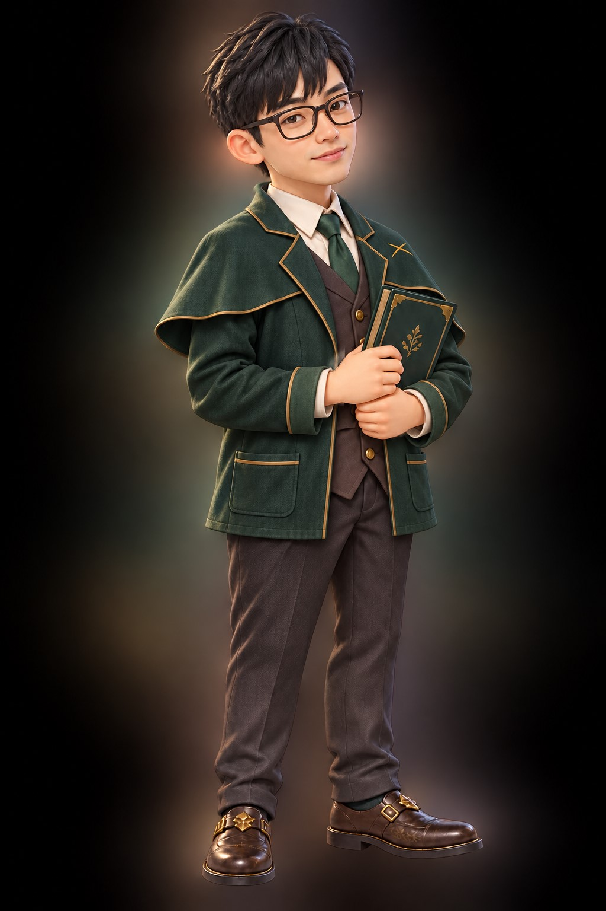
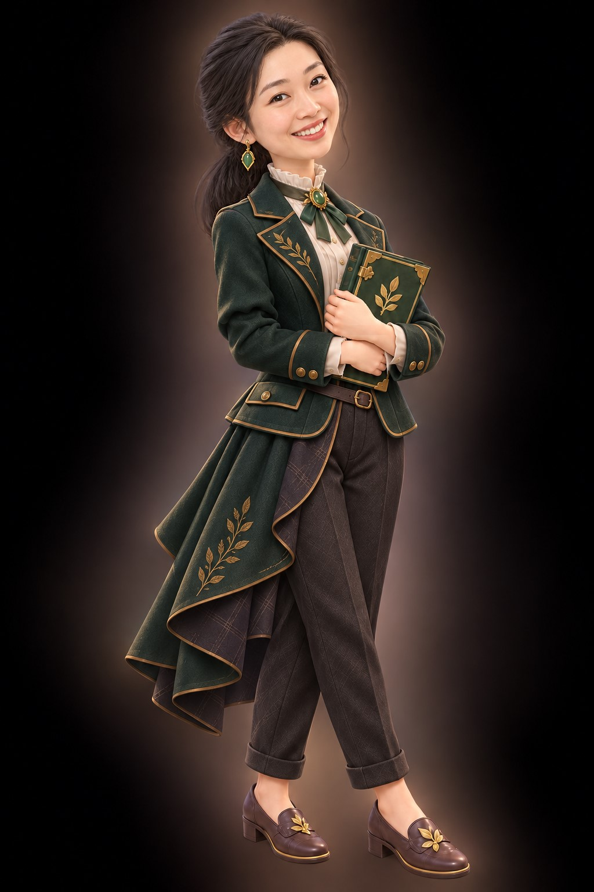
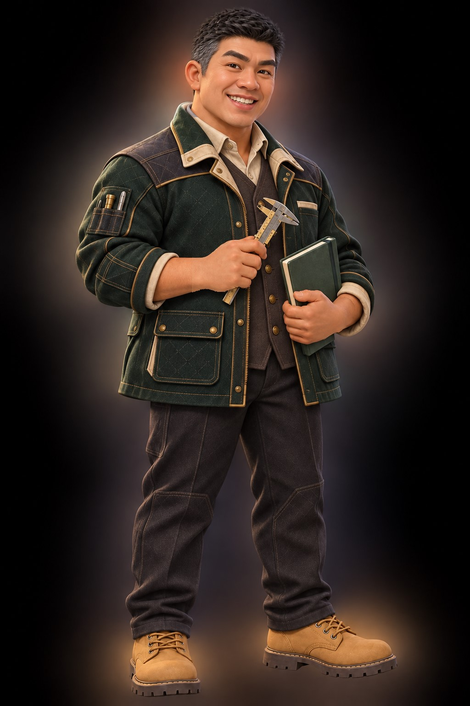
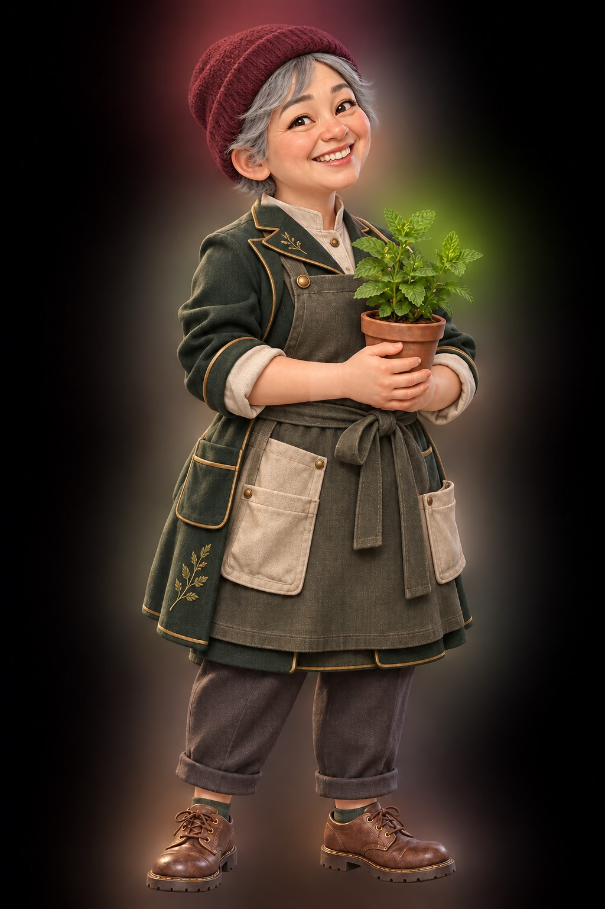
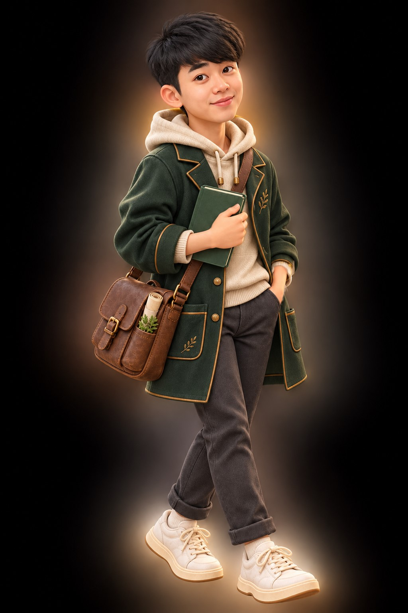
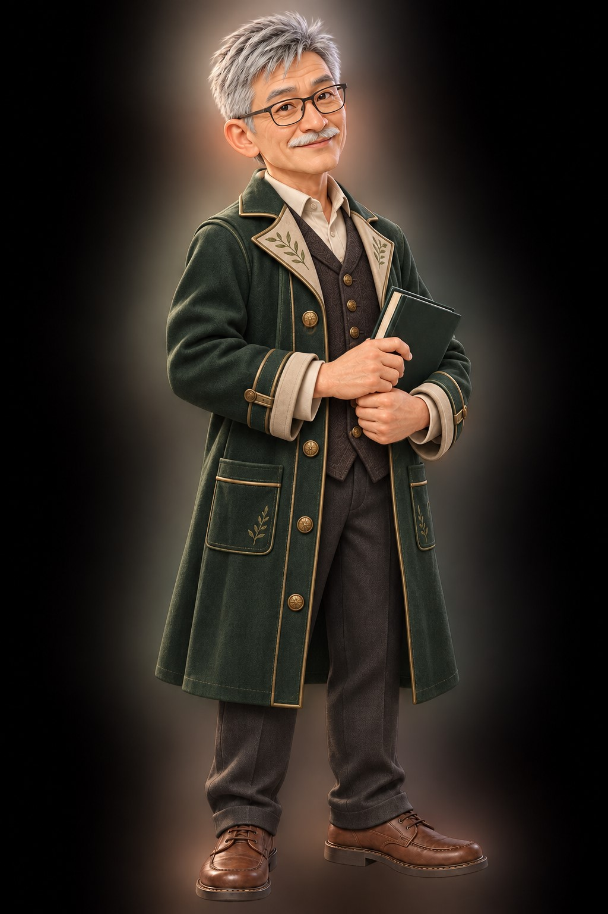
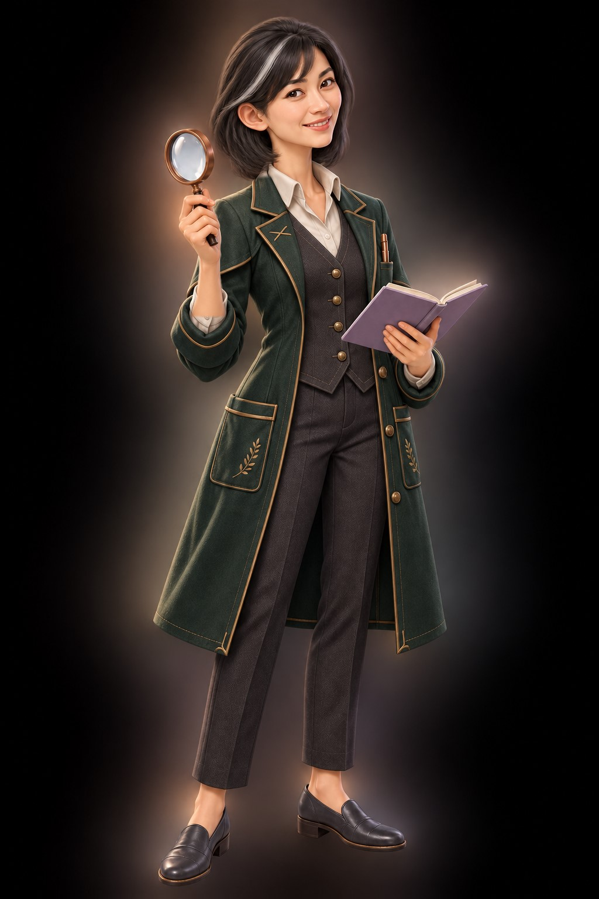

PHARMACY ACADEMY · ART IN PROGRESS
交線學院 COMMON｜十位角色正面服裝
以原遊戲角色為基礎，為每人設計同系列、不同剪裁的服裝。點開圖片可看放大版本。
這是正面原畫候選的進度預覽。四方向、八欄穿脫、RUN8、商城與場景穿戴仍在製作，尚未放進正式遊戲。










以原遊戲角色為基礎，為每人設計同系列、不同剪裁的服裝。點開圖片可看放大版本。






